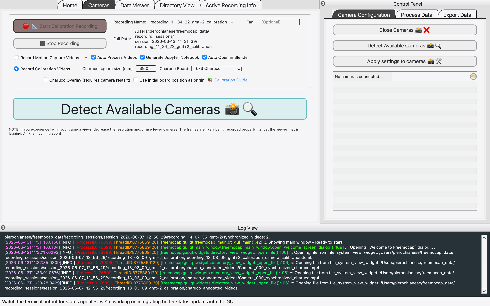
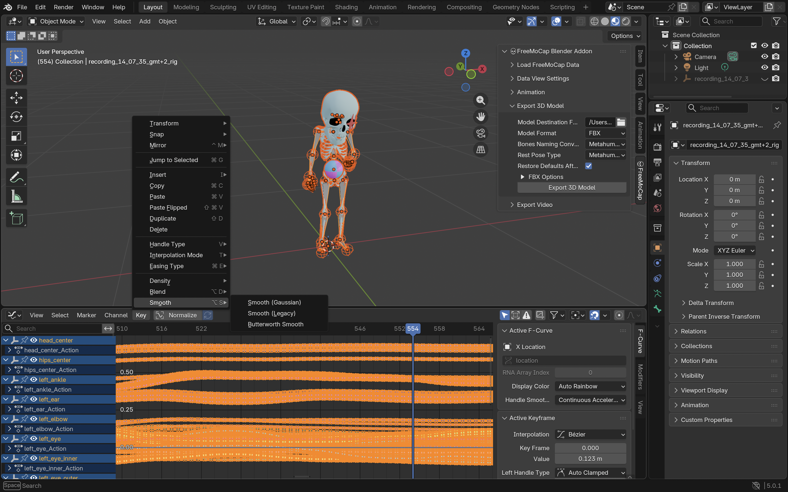

Introduction
For indie game developers, capturing realistic human animations is often a major hurdle. Traditional motion capture (mocap) setups require expensive specialized suits, optical trackers, or studio space.
Enter FreeMocap (codebase available on GitHub)—an open-source, markerless motion capture library that tracks human motion in 3D using standard consumer cameras. In this article, I document my pipeline for recording animations with consumer hardware, cleaning them in Blender, and retargeting them to the Unreal Engine 5 Mannequin (Manny).
1. The Recording Setup
FreeMocap relies on computer vision algorithms to reconstruct a 3D skeleton from multiple 2D video feeds. Achieving a good result depends heavily on your camera layout and calibration.
Hardware Configuration
- Two USB Webcams: Placed at a 60-to-90-degree angle relative to each other, framing the active capture area. This provides the software with the triangulation data necessary to calculate depth.
- Smartphone (iPhone) Experiment: For improved accuracy, you can add an iPhone camera to the setup. Linking it alongside standard webcams creates a hybrid system that captures finer movements.
Calibration & Capture
Before recording, you must calibrate the workspace. You hold a checkerboard-pattern calibration grid and move it in front of all cameras. FreeMocap processes these frame synchronizations to map the cameras in virtual 3D space. Once calibrated, you record your performance, ensuring your full body is visible in both feeds.

Calibrating the FreeMocap cameras using a checkerboard grid to establish the 3D space.
Video showcasing the live multi-camera calibration capture in FreeMocap.
2. Rigging & Cleaning in Blender
The raw motion data exported by FreeMocap can be noisy and jittery. Blender is where we translate this coordinates data into a structured armature and smooth out the animations.
Targeting MetaHuman Bones
Renaming and matching raw tracker bones to a target game engine skeleton manually is tedious. To solve this, I used the FreeMocap Blender Addon. This addon automatically sets up a standard MetaHuman bone structure over the tracked data. By generating an armature that conforms to standard naming conventions and hierarchy, it saves hours of rigging work and ensures immediate compatibility.
Cleaning Keyframe Jitter
Markerless mocap data typically suffers from high-frequency noise (jittering). To clean this up:
- Import the generated armature into Blender's Graph Editor.
- Select the bone channels showing the most noticeable jitter.
- Apply a Smooth Filter (Alt+O or via the Graph menu) to filter out the high-frequency micro-movements while keeping the core motion.
This smooths out the animation, making it ready for export as an FBX file.

Cleaning the keyframes and reviewing the MetaHuman skeleton structure in Blender.
3. Importing & Retargeting in Unreal Engine 5
Now that we have a cleaned animation file mapped to MetaHuman bones, we import it into Unreal Engine 5 and retarget it to our game's default character mesh.
Importing the FBX
In UE5, import the FBX file. In the FBX Import Options, choose the MetaHuman skeleton as the target. If you don't have it imported yet, import it as a new skeletal mesh and check the animation checkbox.
Retargeting the Animation
Once the animation is imported, we need to map it onto the default UE5 Mannequin (Manny) and then onto our final custom game character:
- MetaHuman to Manny: Since MetaHuman and the UE5 Mannequin (Manny) share highly compatible skeletal structures in Unreal Engine 5, you do not need to create a custom IK Rig or Retargeter from scratch. The MetaHuman animation asset can be retargeted directly to Manny using Unreal's compatible skeleton mapping.
- Manny to Custom Character: Next, to map the animation onto the final custom game character, we use a custom-configured IK Retargeter. This retargeter is set up with the Manny IK Rig as the Source and the custom character's IK Rig as the Target.
- Mapping & Export: Inside this custom IK Retargeter, map the retarget chains (Spine, Limbs, Head, etc.), adjust target offsets to prevent feet sliding or clipping, and export the final animation asset. The animation is now ready to be used on your character!
Raw preview of the retargeted animation on the UE5 Manny skeleton.
The final retargeted animation running in Unreal Engine 5 on the custom character skeleton.
Summary & Best Practices
Using FreeMocap, Blender, and UE5, you can construct a zero-cost motion capture pipeline that produces usable, realistic animations for prototyping or final production. For the best results:
- Clothing Contrast: Wear form-fitting clothes that contrast heavily with your background. Avoid dark clothes in a dark room.
- Lighting: Ensure even lighting across the room. Harsh shadows can confuse the computer vision algorithms.
- Occlusion Warning: Pay extreme attention to body part visibility. If a camera's line of sight to a limb is blocked (occluded) and no other camera is framing that specific part during a movement, the tracking algorithm will fail to triangulate, resulting in a completely glitched or broken animation.
Looking Ahead
This dual-camera pipeline serves as an accessible starting point. Moving forward, I plan to conduct further deep dives experimenting with improved and more complex configurations, utilizing a higher count of synchronized cameras to refine tracking accuracy and eliminate occlusions entirely.
While I might have made some mistakes or skipped certain optimizations along the way, and there are surely aspects that could be polished or done better, I believe this pipeline serves as a solid and practical starting point for indie developers looking to explore markerless motion capture on a budget.
Written by Piero Chianese
Character model created by Alessandra Bianchi. Special thanks to the FreeMocap developers and community for creating and maintaining this incredible open-source project.